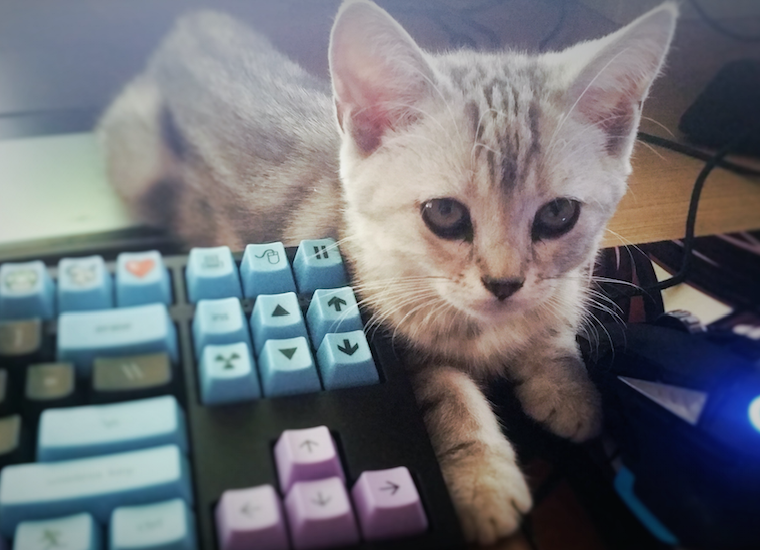

hello, my name is robert tan and i am a first year jmc student at imperial college london
i like anime and league of legends
this is my cute cat :pppp her name is pancake

<----- C U T I E
isn't my cute cat cute? i LOVE cats btw ^.^
anyways, i am a canadian born chinese but i have been living in beijing for the better half of my life
welcome to my world!!!11!1!! yay
ever since 2004, i have been attending western academy of beijing, an ib certified international school
i graduated with an ib (international baccalaureate) diploma in may of 2017
i'm pretty impressed that i've been able to graduate
there, i took ib courses with a focus on math, physics, and chemistry
and as a result, i was able to get into the jmc course at imperial college
thanks wab :)
ok now here's a dope photo of my hs buddies at grad!!!
ok you might think this section is just gonna be anime and league,
well ur not completely wrong, heres an amv i made of fate/stay night (saber <3) to show how much i love anime (and edm for that matter)
BUT i also happen to have other interests, such as building computers and SHOPPING!!!
here is the spec of my triple monitor PC i built when i was in 10th grade :) its my bae:
hi i gotta make myself seem not completely autistic so heres my fb, insta, and stuff:
click here for facebook!!!!
now heres my instaaa (its just a bunch of cat pics)
steam :p
wechat id: gogetaashame